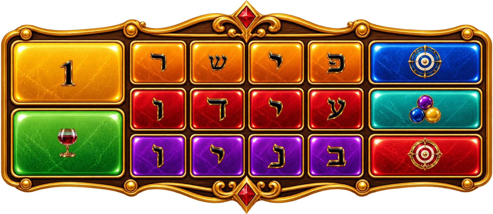

בחרו סכום ולחצו על משבצת. צבע הרקע מבדיל בין אותיות זהות.
כל השחקנים משחקים על אותו גלגל. 20 שניות להימור ולביטול לפני הנעילה. ההימור יורד מהארנק מיד. כל אחד מ־54 התאים שווה הסתברות.
1 משלם רווח 1:1. אותיות פישר ועידו משלמות רווח 25:1, ואותיות בניו רווח 42:1. מהמרים על אות וצבע מסוימים. הקרן חוזרת בנוסף לרווח בזכייה. הימורים על משבצות אחרות אינם מוחזרים.
בכל סיבוב 3–10 תאים מקבלים מכפיל 2/3/5/10/20/50 במשקלים 35/25/18/12/7/3. המכפיל חל על הרווח בלבד; הקרן אינה מוכפלת.
יואב: בחרו אחת משלוש כוסות בתוך 15 שניות. לכוסות תוצאות שונות, עד פי 50 רווח לפני מכפיל הגלגל.
מטווח: בחרו מטרה בתוך 10 שניות. הפרסים 10,25,30,50,100; פי 30 מעניק גם ירייה נוספת בתוך 5 שניות. VIP: בחרו שלוש מטרות שונות בתוך 15 שניות, מתוך 10,20,25,50,100. סכום הפרסים מוכפל במכפיל הגלגל. בנימין תמיד פי 100; מיקומי הדמויות מעורבבים.
כדורים: בחרו צבע בתוך 10 שניות. לכל צבע 27 כדורים רגילים ושלושה כדורי פי 2, ועוד 20 שחורים — 110 בסך הכול, ללא החזרה. כדור רגיל מקדם שלב ומיוחד שניים. הסולם מתחיל בפי 5 ומסתיים בפי 1000, לפני מכפיל הגלגל. כדור יוצא כל 3 שניות; הבונוס מסתיים בשחור הרביעי.
בחירה שלא הושלמה בזמן מושלמת באקראי בשרת. יציאה מהדף אינה מבטלת הימור נעול. הבונוס ממשיך גם בניתוק, ותוצאתכם והזיכוי נשמרים. סיבוב חדש ממתין לסיום הבונוס המשותף ולסיכום.